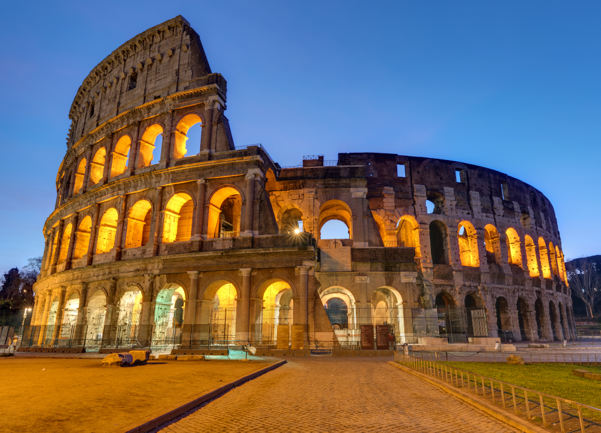
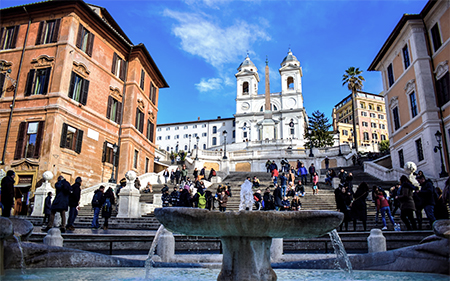
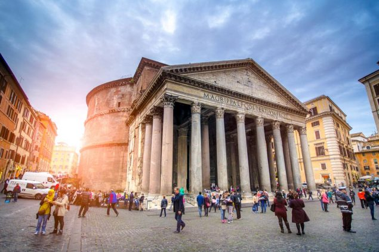

Back to main
Basic info about Rome
Population
Area
GDP
Language
Year of Founding
Tome Zone
Currency
2.873 million
496 square miles
€163.14 trillion
Italian
753 BC
CET
Euros
Satellite View
google maps embed code generator
Pupular attractions (click to discover more)
Colosseum

Spanish Steps

Pantheon

Fun facts about Rome
Rome was founded in 753 BC by Romulus
Rome is the most visited city in Italy
Rome is 2,500 years older than the Republic of Italy
Rome became the capital of Italy in 1871
There are more than 2000 fountains in Rome, such as:
Fontana della Barcaccia
Fontana del Tritone
Fontana delle Tartarughe
The Trevi Fountain
Food of Rome